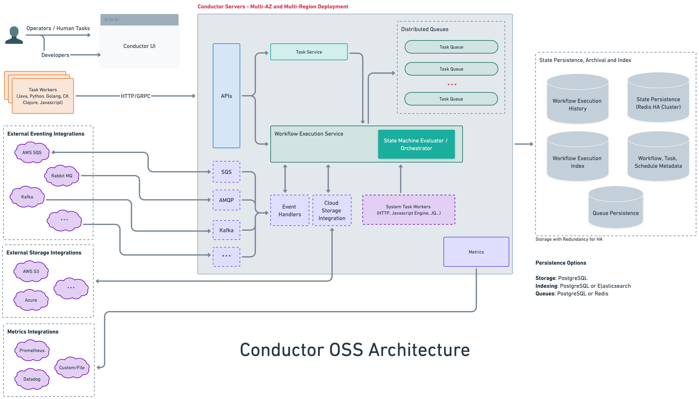

Self-hosted deployment guide
Conductor is a self-hosted, open source workflow engine that you deploy on your own infrastructure. This production deployment guide covers everything you need to run Conductor at scale: architecture, backend configuration, horizontal scaling, workflow monitoring, and tuning.
Architecture overview
A Conductor deployment consists of these components:

What each component does:
| Component | Role |
|---|---|
| API Server | Exposes REST and gRPC endpoints for workflow and task operations. |
| Decider | The core state machine. Evaluates workflow state and schedules the next set of tasks. |
| Sweeper | Background process that polls for running workflows and triggers the decider to evaluate them. Required for progress on long-running workflows. |
| System Task Workers | Execute built-in task types (HTTP, Event, Wait, Inline, JSON_JQ, etc.) within the server JVM. |
| Event Processor | Listens to configured event buses and triggers workflows or completes tasks based on incoming events. |
| Database | Persists workflow definitions, execution state, task state, and poll data. |
| Queue | Manages task scheduling — pending tasks, delayed tasks, and the sweeper's own work queue. |
| Index | Powers workflow and task search in the UI and via the search API. |
| Lock | Distributed lock that prevents concurrent decider evaluations of the same workflow. Required in production. |
Quick start with Docker Compose
For local development and evaluation:
git clone https://github.com/conductor-oss/conductor
cd conductor
docker compose -f docker/docker-compose.yaml up
This starts Conductor with Redis (database + queue), Elasticsearch (indexing), and the server with UI on port 8080.
| URL | Description |
|---|---|
http://localhost:8080 |
Conductor UI |
http://localhost:8080/swagger-ui/index.html |
REST API docs |
http://localhost:8080/api/ |
API base URL |
Pre-built compose files for other backend combinations:
| Compose file | Database | Queue | Index |
|---|---|---|---|
docker-compose.yaml |
Redis | Redis | Elasticsearch 7 |
docker-compose-es8.yaml |
Redis | Redis | Elasticsearch 8 |
docker-compose-postgres.yaml |
PostgreSQL | PostgreSQL | PostgreSQL |
docker-compose-postgres-es7.yaml |
PostgreSQL | PostgreSQL | Elasticsearch 7 |
docker-compose-mysql.yaml |
MySQL | Redis | Elasticsearch 7 |
docker-compose-redis-os2.yaml |
Redis | Redis | OpenSearch 2 |
docker-compose-redis-os3.yaml |
Redis | Redis | OpenSearch 3 |
# Example: PostgreSQL for everything
docker compose -f docker/docker-compose-postgres.yaml up
# Example: Redis + Elasticsearch 8
docker compose -f docker/docker-compose-es8.yaml up
# Example: Redis + OpenSearch 3
docker compose -f docker/docker-compose-redis-os3.yaml up
For Elasticsearch 8, set conductor.indexing.type=elasticsearch8 and use
config-redis-es8.properties or an equivalent custom config.
Production configuration
All configuration is done via Spring Boot properties in application.properties or environment variables. Properties can also be mounted as a Docker volume.
Database
The database stores workflow definitions, execution state, task state, and event handler definitions.
Supported database backends:
| Backend | Property value | When to use | Notes |
|---|---|---|---|
| PostgreSQL | postgres |
Recommended for production. ACID, battle-tested, supports indexing too. | Requires spring.datasource.* config. |
| MySQL | mysql |
Production alternative if your team already runs MySQL. | Requires spring.datasource.* config. Needs separate queue backend (Redis). |
| Redis | redis_standalone |
Fast, simple. Good for moderate scale. | Requires conductor.redis.* config. |
| Cassandra | cassandra |
High write throughput, multi-region. | Requires conductor.cassandra.* config. |
| SQLite | sqlite |
Local development only. Single-file, zero config. | Default. Not for production. |
PostgreSQL
conductor.db.type=postgres
conductor.external-payload-storage.type=postgres
spring.datasource.url=jdbc:postgresql://db-host:5432/conductor
spring.datasource.username=conductor
spring.datasource.password=<password>
# Optional tuning
conductor.postgres.deadlockRetryMax=3
conductor.postgres.taskDefCacheRefreshInterval=60s
conductor.postgres.asyncMaxPoolSize=12
conductor.postgres.asyncWorkerQueueSize=100
MySQL
conductor.db.type=mysql
spring.datasource.url=jdbc:mysql://db-host:3306/conductor
spring.datasource.username=conductor
spring.datasource.password=<password>
# Optional tuning
conductor.mysql.deadlockRetryMax=3
conductor.mysql.taskDefCacheRefreshInterval=60s
Redis
conductor.db.type=redis_standalone
# Format: host:port:rack (semicolon-separated for multiple hosts)
conductor.redis.hosts=redis-host:6379:us-east-1c
conductor.redis.workflowNamespacePrefix=conductor
conductor.redis.queueNamespacePrefix=conductor_queues
conductor.redis.taskDefCacheRefreshInterval=1s
# Connection pool
conductor.redis.maxIdleConnections=8
conductor.redis.minIdleConnections=5
# SSL
conductor.redis.ssl=false
# Auth (password is taken from the first host entry: host:port:rack:password)
# Or set conductor.redis.username and conductor.redis.password directly
Queue
The queue backend manages task scheduling — it tracks which tasks are pending, delayed, or ready for execution. The sweeper and system task workers all depend on it.
Supported queue backends:
| Backend | Property value | When to use |
|---|---|---|
| PostgreSQL | postgres |
Use when database is also PostgreSQL. Simplest stack. |
| Redis | redis_standalone |
Use when database is Redis or MySQL. Fast, low-latency. |
| SQLite | sqlite |
Local development only. |
Match your queue backend to your database
PostgreSQL database + PostgreSQL queue is the simplest production stack — one fewer dependency. If you use MySQL for the database, pair it with Redis for the queue.
Indexing
The indexing backend powers workflow and task search in the UI and via the /api/workflow/search and /api/tasks/search endpoints.
Supported indexing backends:
| Backend | Property value | When to use | Notes |
|---|---|---|---|
| PostgreSQL | postgres |
Simplest stack when database is also PostgreSQL. | Set conductor.elasticsearch.version=0 to disable ES client. |
| Elasticsearch 7 | elasticsearch |
Best search performance at scale. Full-text search. | Set conductor.elasticsearch.version=7. |
| Elasticsearch 8 | elasticsearch8 |
Use when running the ES8 persistence module. | Set conductor.elasticsearch.version=8. |
| OpenSearch 2 | opensearch2 |
Open-source ES alternative. | Compatible with ES 7 queries. |
| OpenSearch 3 | opensearch3 |
Latest OpenSearch. | |
| SQLite | sqlite |
Local development only. | |
| Disabled | N/A | Set conductor.indexing.enabled=false. UI search won't work. |
PostgreSQL indexing
conductor.indexing.enabled=true
conductor.indexing.type=postgres
# Disable Elasticsearch client
conductor.elasticsearch.version=0
Elasticsearch 7
conductor.indexing.enabled=true
conductor.elasticsearch.url=http://es-host:9200
conductor.elasticsearch.version=7
conductor.elasticsearch.indexName=conductor
conductor.elasticsearch.clusterHealthColor=yellow
# Performance tuning
conductor.elasticsearch.indexBatchSize=1
conductor.elasticsearch.asyncMaxPoolSize=12
conductor.elasticsearch.asyncWorkerQueueSize=100
conductor.elasticsearch.asyncBufferFlushTimeout=10s
conductor.elasticsearch.indexShardCount=5
conductor.elasticsearch.indexReplicasCount=1
# Auth (if using security)
conductor.elasticsearch.username=elastic
conductor.elasticsearch.password=<password>
Elasticsearch 8
conductor.indexing.enabled=true
conductor.indexing.type=elasticsearch8
conductor.elasticsearch.url=http://es-host:9200
conductor.elasticsearch.version=8
conductor.elasticsearch.indexName=conductor
conductor.elasticsearch.clusterHealthColor=yellow
OpenSearch
conductor.indexing.enabled=true
conductor.indexing.type=opensearch2 # or opensearch3
conductor.opensearch.url=http://os-host:9200
conductor.opensearch.indexPrefix=conductor
conductor.opensearch.clusterHealthColor=yellow
conductor.opensearch.indexReplicasCount=0
Async indexing
For high-throughput deployments, enable async indexing to decouple the indexing path from the workflow execution path:
conductor.app.asyncIndexingEnabled=true
conductor.app.asyncUpdateShortRunningWorkflowDuration=30s
conductor.app.asyncUpdateDelay=60s
Indexing toggles
Control what gets indexed:
conductor.app.taskIndexingEnabled=true
conductor.app.taskExecLogIndexingEnabled=true
conductor.app.eventMessageIndexingEnabled=true
conductor.app.eventExecutionIndexingEnabled=true
Locking
Required for production
Distributed locking prevents race conditions when multiple server instances evaluate the same workflow concurrently. Always enable locking in production with a distributed lock provider (Redis or Zookeeper).
Supported lock providers:
| Provider | Property value | When to use |
|---|---|---|
| Redis | redis |
Recommended. Use when Redis is already in the stack. |
| Zookeeper | zookeeper |
Use when Zookeeper is available (e.g. Kafka deployments). |
| Local | local_only |
Single-instance development only. Not safe for multi-instance. |
Redis lock
conductor.workflow-execution-lock.type=redis
conductor.app.workflowExecutionLockEnabled=true
conductor.app.lockLeaseTime=60000 # lock held for max 60s
conductor.app.lockTimeToTry=500 # wait up to 500ms to acquire
conductor.redis-lock.serverType=SINGLE # SINGLE, CLUSTER, or SENTINEL
conductor.redis-lock.serverAddress=redis://redis-host:6379
# conductor.redis-lock.serverPassword=<password>
# conductor.redis-lock.serverMasterName=master # for Sentinel
# conductor.redis-lock.namespace=conductor # key prefix
conductor.redis-lock.ignoreLockingExceptions=false
Zookeeper lock
conductor.workflow-execution-lock.type=zookeeper
conductor.app.workflowExecutionLockEnabled=true
conductor.app.lockLeaseTime=60000
conductor.app.lockTimeToTry=500
conductor.zookeeper-lock.connectionString=zk1:2181,zk2:2181,zk3:2181
# conductor.zookeeper-lock.sessionTimeoutMs=60000
# conductor.zookeeper-lock.connectionTimeoutMs=15000
# conductor.zookeeper-lock.namespace=conductor
Sweeper
The sweeper is a background process that monitors running workflows. It polls the queue for workflows that need evaluation and triggers the decider. Without the sweeper, long-running workflows will not make progress.
The sweeper runs automatically as part of the Conductor server. Tune the thread count based on your workflow volume:
# Number of sweeper threads (default: availableProcessors * 2)
conductor.app.sweeperThreadCount=8
# How long to wait when polling the sweep queue (default: 2000ms)
conductor.app.sweeperWorkflowPollTimeout=2000
# Batch size per sweep poll (default: 2)
conductor.app.sweeper.sweepBatchSize=2
# Queue pop timeout in ms (default: 100)
conductor.app.sweeper.queuePopTimeout=100
Sweeper sizing
Start with sweeperThreadCount = 2 * CPU cores. If you see workflows stuck in RUNNING state, increase it. If CPU usage is high on idle, decrease it.
System task workers
System task workers execute built-in task types (HTTP, Event, Wait, Inline, JSON_JQ_TRANSFORM, etc.) inside the Conductor server JVM. They poll internal queues for scheduled system tasks and execute them.
# Number of system task worker threads (default: availableProcessors * 2)
conductor.app.systemTaskWorkerThreadCount=20
# Max number of tasks to poll at once (default: same as thread count)
conductor.app.systemTaskMaxPollCount=20
# Poll interval (default: 50ms)
conductor.app.systemTaskWorkerPollInterval=50ms
# Callback duration — how often to re-check async system tasks (default: 30s)
conductor.app.systemTaskWorkerCallbackDuration=30s
# Queue pop timeout (default: 100ms)
conductor.app.systemTaskQueuePopTimeout=100ms
Running system task workers separately
In large deployments, you may want to run system task workers on dedicated instances, separate from the API server. Use the execution namespace to isolate which instance handles system tasks:
# On API-only instances — set a namespace that no system task worker listens on
conductor.app.systemTaskWorkerExecutionNamespace=api-only
conductor.app.systemTaskWorkerThreadCount=0
# On dedicated system task worker instances — match the namespace
conductor.app.systemTaskWorkerExecutionNamespace=worker-pool-1
conductor.app.systemTaskWorkerThreadCount=40
conductor.app.systemTaskMaxPollCount=40
Isolated system task workers
For task domain isolation (routing specific tasks to specific worker groups):
Postpone threshold
When a system task has been polled many times without completing (e.g. a Join waiting for branches), Conductor progressively delays re-evaluation to avoid busy-polling:
# After this many polls, begin exponential backoff (default: 200)
conductor.app.systemTaskPostponeThreshold=200
Event processing
The event processor listens to configured event buses and triggers workflows or completes tasks based on incoming events.
# Thread count for event processing (default: 2)
conductor.app.eventProcessorThreadCount=4
# Event queue polling
conductor.app.eventQueueSchedulerPollThreadCount=4 # default: CPU cores
conductor.app.eventQueuePollInterval=100ms
conductor.app.eventQueuePollCount=10
conductor.app.eventQueueLongPollTimeout=1000ms
See the Event-driven recipes for configuring Kafka, NATS, AMQP, and SQS event queues.
Payload size limits
Conductor enforces payload size limits to prevent oversized data from degrading performance. When a payload exceeds the threshold, it is automatically stored in external payload storage (S3, PostgreSQL, or Azure Blob).
# Workflow input/output — threshold to move to external storage (default: 5120 KB)
conductor.app.workflowInputPayloadSizeThreshold=5120KB
conductor.app.workflowOutputPayloadSizeThreshold=5120KB
# Workflow input/output — hard limit, fails the workflow (default: 10240 KB)
conductor.app.maxWorkflowInputPayloadSizeThreshold=10240KB
conductor.app.maxWorkflowOutputPayloadSizeThreshold=10240KB
# Task input/output — threshold to move to external storage (default: 3072 KB)
conductor.app.taskInputPayloadSizeThreshold=3072KB
conductor.app.taskOutputPayloadSizeThreshold=3072KB
# Task input/output — hard limit, fails the task (default: 10240 KB)
conductor.app.maxTaskInputPayloadSizeThreshold=10240KB
conductor.app.maxTaskOutputPayloadSizeThreshold=10240KB
# Workflow variables — hard limit (default: 256 KB)
conductor.app.maxWorkflowVariablesPayloadSizeThreshold=256KB
For external payload storage configuration, see External Payload Storage.
Workflow monitoring and observability
Conductor exposes Prometheus-compatible metrics out of the box for workflow monitoring and observability:
conductor.metrics-prometheus.enabled=true
management.endpoints.web.exposure.include=health,info,prometheus
management.metrics.web.server.request.autotime.percentiles=0.50,0.75,0.90,0.95,0.99
management.endpoint.health.show-details=always
Scrape http://<conductor-host>:8080/actuator/prometheus with Prometheus.
For details on available metrics, see Server Metrics and Client Metrics.
Recommended production configurations
PostgreSQL stack (simplest)
One database for everything — fewest moving parts.
# Database
conductor.db.type=postgres
conductor.queue.type=postgres
conductor.external-payload-storage.type=postgres
spring.datasource.url=jdbc:postgresql://db-host:5432/conductor
spring.datasource.username=conductor
spring.datasource.password=<password>
# Indexing (use PostgreSQL, no Elasticsearch needed)
conductor.indexing.enabled=true
conductor.indexing.type=postgres
conductor.elasticsearch.version=0
# Locking (use Redis — lightweight, fast)
conductor.workflow-execution-lock.type=redis
conductor.app.workflowExecutionLockEnabled=true
conductor.redis-lock.serverAddress=redis://redis-host:6379
# Sweeper
conductor.app.sweeperThreadCount=8
# System task workers
conductor.app.systemTaskWorkerThreadCount=20
conductor.app.systemTaskMaxPollCount=20
# Metrics
conductor.metrics-prometheus.enabled=true
management.endpoints.web.exposure.include=health,info,prometheus
Redis + Elasticsearch stack (high throughput)
Best search performance and lowest latency for queue operations.
# Database + Queue
conductor.db.type=redis_standalone
conductor.queue.type=redis_standalone
conductor.redis.hosts=redis-host:6379:us-east-1c
conductor.redis.workflowNamespacePrefix=conductor
conductor.redis.queueNamespacePrefix=conductor_queues
# Indexing
conductor.indexing.enabled=true
conductor.elasticsearch.url=http://es-host:9200
conductor.elasticsearch.version=7
conductor.elasticsearch.indexName=conductor
conductor.elasticsearch.clusterHealthColor=yellow
conductor.app.asyncIndexingEnabled=true
# Locking
conductor.workflow-execution-lock.type=redis
conductor.app.workflowExecutionLockEnabled=true
conductor.redis-lock.serverAddress=redis://redis-host:6379
# Sweeper
conductor.app.sweeperThreadCount=16
# System task workers
conductor.app.systemTaskWorkerThreadCount=40
conductor.app.systemTaskMaxPollCount=40
# Metrics
conductor.metrics-prometheus.enabled=true
management.endpoints.web.exposure.include=health,info,prometheus
Running with Docker
Using Docker Compose
git clone https://github.com/conductor-oss/conductor
cd conductor
docker compose -f docker/docker-compose.yaml up
To use a different backend, swap the compose file:
Using the standalone image
Custom configuration via volume mount
Mount your own properties file to override the defaults without rebuilding the image:
docker run -p 8080:8080 \
-v /path/to/my-config.properties:/app/config/config.properties \
conductoross/conductor:latest
Accessing Conductor
| URL | Description |
|---|---|
http://localhost:8080 |
Conductor UI |
http://localhost:8080/swagger-ui/index.html |
REST API docs |
Shutting down
Multi-instance deployment and horizontal scaling
For high availability and horizontal scaling, run multiple Conductor server instances behind a load balancer. All instances share the same database, queue, index, and lock backends. This architecture enables workflow engine scalability to millions of concurrent executions.
Requirements:
- Distributed locking must be enabled (
redisorzookeeper). Without it, concurrent decider evaluations on the same workflow will cause race conditions. - All instances must point to the same database, queue, and indexing backends.
- The load balancer should use round-robin or least-connections routing.
Optional: separate API and worker instances:
┌──────────────────┐ ┌──────────────────┐
│ API Instance 1 │ │ API Instance 2 │ ← handle REST/gRPC, low system task threads
│ (systemTask=0) │ │ (systemTask=0) │
└────────┬─────────┘ └────────┬─────────┘
│ │
┌────┴────────────────────────┴────┐
│ Load Balancer │
└────┬────────────────────────┬────┘
│ │
┌────────┴──────────┐ ┌───────┴───────────┐
│ Worker Instance │ │ Worker Instance │ ← high system task threads, sweeper
│ (systemTask=40) │ │ (systemTask=40) │
└───────────────────┘ └───────────────────┘
Troubleshooting
| Issue | Fix |
|---|---|
| Out of memory or slow performance | Check JVM heap usage and adjust -Xms / -Xmx as necessary. Monitor with jstat or the /actuator/health endpoint. |
| Elasticsearch stuck in yellow health | Set conductor.elasticsearch.clusterHealthColor=yellow or add more ES nodes for green. |
| Workflows stuck in RUNNING | Check sweeper is running and sweeperThreadCount > 0. Check lock provider is reachable. |
| System tasks not executing | Verify systemTaskWorkerThreadCount > 0 and the queue backend is reachable. |
| Config changes not taking effect | Properties are baked into the Docker image at build time. Mount a volume instead of rebuilding. |